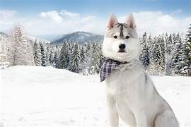

HUSKY
Husky is a general term for a dog used in the polar regions, primarily and specifically for work as sled dogs. It refers to a traditional northern type, notable for its cold-weather tolerance and overall hardiness. Modern racing huskies that maintain arctic breed traits (also known as Alaskan huskies) represent an ever-changing crossbreed of the fastest dogs.
